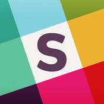

Clementine Iconography
Goal
Revamping Clementine’s iconography started out as a simple project to soften corners and unify stroke widths on the app’s tab bar:
However, I knew that simply updating the tab bar wouldn’t be enough. We needed to do a complete overhaul of our iconography to communicate Clementine’s key brand words: trustworthy, friendly, and secure.
Several product sprints had resulted in icon bloat, with icons of different styles cobbled together each time a new feature required them. A new icon set could bring visual consistency throughout the entire app and promote a greater sense of calm and reassurance in our customers.
Keeping this in mind, I aimed for an icon style that would be personable but not too blithe.
“Competitor” Analysis
Typically, at the beginning of a project I’d take a look at products in the same space as Clementine and use their design as a launch point to figure out what other enterprise products are doing well (or not).
However, given that enterprise products are traditionally
-
Airbnb
-
Dropbox
-
Foursquare + Swarm
-
Path
-

Slack
-
Sunrise
I also bucketed a few icon sets on Dribbble for inspiration.
Concepts & Sketching
I start every project with some quick sketches to get feedback from the team about the direction I’m taking without letting visuals interfere with critique. However, sketches for this project progressed to a more detailed state than usual since our onboarding is heavily visual. I wanted to outline illustrations/interactions before I moved to Sketch and Framer since redoing them would be incredibly time-consuming.
While sketching, I kept in mind that:
- While Clementine is an enterprise product, it’s still a consumer-facing product. The language and tone should reflect that.
- Clementine has a wide range of customers (some who are focused on the messaging aspect, others focused on secure communications, etc.), so each of the highlighted features needs to shine, as well as fit into the overarching product story.
- Customers vary in terms of how they go through onboarding. Some want to sign up right away. Some need to be wined and dined. Some don’t care about your animations. The pacing of onboarding should be flexible, and actionable targets should exist throughout.
Mockups

Storyboarding in Sketch quickly made it clear that:
- My idea to convey how Clementine separates your work and personal life was too subtle. The illustrations for work life and home life didn’t provide enough contrast to emphasize this feature effectively.
- My idea to feature secure messaging, however, was too over-the-top. The animations and illustrations I had planned would either obscure text or too strictly control pacing for users through the onboarding flow.

Prototyping
Prototyping for the icon redesign was pretty minimal since icons are fairly static within the app. I did do some quick animations in Pixate for features such as inviting contacts and ..., which you can see below.
Final Design
Merp
Next Steps & Lessons Learned
Merp
- Created file organization in Dropbox.